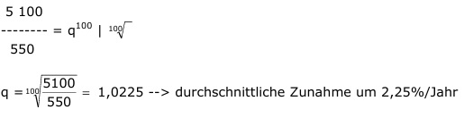

Aufgabe 246 Der globale Wasserverbrauch ist unten dargestellt: Jahr 1900 1920 1940 1960 1980 2000 Verbrauch in km³/Jahr 550 950 1100 2100 3250 5100 Nach wie viel Jahren wurde ein Verbrauch von 3 000 km³ erreicht? Der Verbrauch ist exponentiell, da er nicht gleichmäßig in einem Zeitraum von 20 Jahren zunimmt. V100 = V0 * q100  Vn = V0 * qn 3 000 km³ = 550 * 1,0225n |:550 3 000 ------- = 1,0225n 550 Logarithmieren: 3 000 lg ------- = lg 1,0225 550 lg 3 000 – lg 550 = n * lg 1,0225n |:lg 1,0225 lg 3 000 – lg 550 3,4771 – 2,7404 n = --------------------- = ------------------- = 76 Jahre lg 1,0225 0,0097